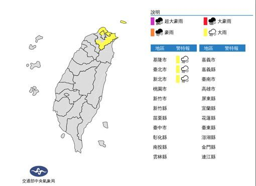

東北風帶水氣 北北基發布大雨特報
受到東北風影響，中央氣象局在今（29）上午10時40分針對北台灣三縣市發布大雨特報。基隆北海岸及大臺北山區有局部大雨發生的機率，提醒民眾特別注意。大雨特報縣市：台北市、新北市、基隆市。根據氣象局上午8時最新觀測，熱帶性低氣壓TD28中心位置在北緯 11.6 度，東經 115.0 度，以每小時18公里速度向西北西進行。中心氣壓1002百帕，近中心最大風速每秒15公尺，瞬間最大陣風每秒 23 公尺。最快今日將形成今年第22號颱風「麥德姆」（Matmo，美國提供，關島查莫洛語的大雨）。不過依照目前觀測。它可能在週三晚間接近中南半島陸地，對台灣沒有影響。中央氣象局指出，今日東北風增強，北部及東北部天氣轉涼，其他地區早晚亦涼，中南部日夜溫差大；臺灣東北部地區有短暫雨，基隆北海岸並有局部較大雨勢發生的機率，北部、東部及東南部地區有局部短暫雨，其他地區及澎湖、金門、馬祖為多雲到晴，午後南部山區有零星短暫陣雨。明日東北風影響，北部及東北部天氣稍涼，其他地區早晚亦涼，中南部日夜溫差大；臺灣東半部及大臺北地區有局部短暫雨，東北部及東部地區並有局部較大雨勢發生的機率，其他地區及澎湖、金門、馬祖為多雲到晴，午後南部山區有零星短暫陣雨。天氣風險公司也提醒，週三開始宜蘭、花蓮慎防大雨，特別是沿海一帶，「整天都在下的話，累積起來也是滿可觀的。」這一波變天一直持續到週五，東北風慢慢減弱北東高溫才會回升到26-27度。（林昀萱報導）
